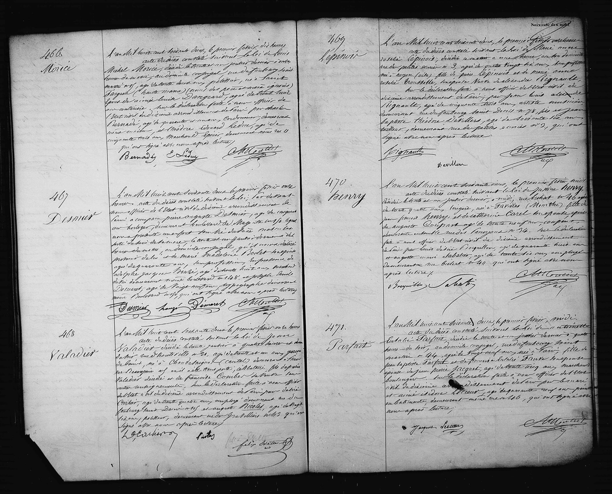

Acte d'état civil · 1er février 1862
Décès de Marie Anne Rosalie Lépinois, Paris 10e arr., 1er février 1862 (acte n° 469)
Ce document établit
- Marie Anne Rosalie Lépinois est décédée le 1er février 1862 à une heure du matin, en son domicile, 3 rue des Petites-Écuries, à Paris (10e arr.) vérifié A0780
« « décédée ce matin à une heure, en son domicile rue des petites écuries n° 3 » »
- L'acte de décès de 1862 la dit âgée de quatre-vingt-six ans et née à Noyon (Oise) vérifié A0781
« « âgée de quatre vingt six ans … née à Noyon (Oise) » »
- L'acte de décès de 1862 la dit fille de Pierre Lépinois et de Marie Anne Rosalie Trousselle vérifié A0782
« « fille de Pierre Lépinois et de Marie Anne Rosalie Trousselle, son épouse » »
- Elle est dite veuve d'Alexandre Rignault en 1862 vérifié A0783
« « Veuve d'Alexandre Rignault » » (lecture incertaine : ponctuation de la ligne 6)
- Le décès de 1862 est déclaré par Jean Louis Alexandre Rignault (dit 53 ans, artiste musicien, 78 rue du Faubourg-Saint-Denis, « fils ») et par Jean Baptiste Théodore Devillers (66 ans, tailleur, 3 rue des Petites-Écuries) vérifié A0784
« « Jean Louis Alexandre Rignault, âgé de cinquante trois ans, artiste musicien, demeurant rue du faubourg Saint Denis n° 78, fils et Jean Baptiste Théodore Devillers, âgé de soixante six ans, tailleur » »
- La Marie Anne Rosalie Lepinois mère de Jean Édouard Amélie (1804) est P7060, épouse de Rignault partiellement vérifié A0787
« « née à Noyon (Oise) … Veuve d'Alexandre Rignault » »
- Elle ne figure pas sous le prénom « Augustine » dans l'acte de 1862 ni dans celui de 1804 (« Marie Anne Rosalie ») vérifié A0792
« « Marie Anne Rosalie Lépinois » »
- Décès : agée de 86 ou 90 (Paris, 10ème) — selon l'arbre transmis non vérifié AR0087
« « décédée ce matin à une heure … âgée de quatre vingt six ans » »
- Naissance : prénommée Augustine sur l'acte de décès de son fils François-Emile (vérifié, Edmond et Léon DUBART sont témoins du décès de François Emile et ont validé le prénom de Augustine) (Noyon, Oise) — selon l'arbre transmis non vérifié AR0086
« « née à Noyon (Oise) » »
- Marie Anne Rosalie LEPINOIS OU LEPINOY (P7060) enfant de Pierre LEPINOIS (PR0042) et Marie Anne Rosalie TROUSSELLE (PR0043) : PR0042 et PR0043 — selon l'arbre transmis non vérifié AR0214
« « fille de Pierre Lépinois et de Marie Anne Rosalie Trousselle, son épouse » »
- Domicile : 3 rue des Petites Ecuries (Paris) — selon l'arbre transmis non vérifié AR0185
« « en son domicile rue des petites écuries n° 3 » »
- Jean Louis Alexandre RIGNAULT (P5764) enfant de Alexandre RIGNAULT (P7058) et Marie Anne Rosalie LEPINOIS OU LEPINOY (P7060) : P7058 et P7060 — selon l'arbre transmis non vérifié AR0186
« « Veuve d'Alexandre Rignault … Jean Louis Alexandre Rignault … fils » »
Transcription
recherches/generation-5/rignault-lepinois/lepinois/transcriptions.md (T1)
Personnes concernées
Jean Louis Alexandre RIGNAULT° 1808 † 1885Alexandre RIGNAULT° 1780 † 1858Marie Anne Rosalie LEPINOIS OU LEPINOY° ~1776? † 1862
Acte original (registre non détruit après 1860). Mots incertains : heure de rédaction, « sans profession ».